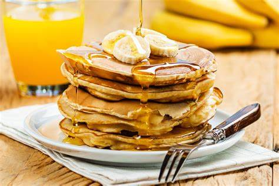

Panqueca de Banana
Ingredientes
- 2 bananas maduras
- 2 ovos
- 1/2 xícara de aveia
- 1 colher (chá) de canela (opcional)
- Mel para servir (opcional)
Modo de Preparo
- Amasse as bananas em uma tigela.
- Adicione os ovos e a aveia. Misture bem até formar uma massa.
- Aqueça uma frigideira antiaderente e coloque porções da massa.
- Doure dos dois lados e sirva com mel se desejar.